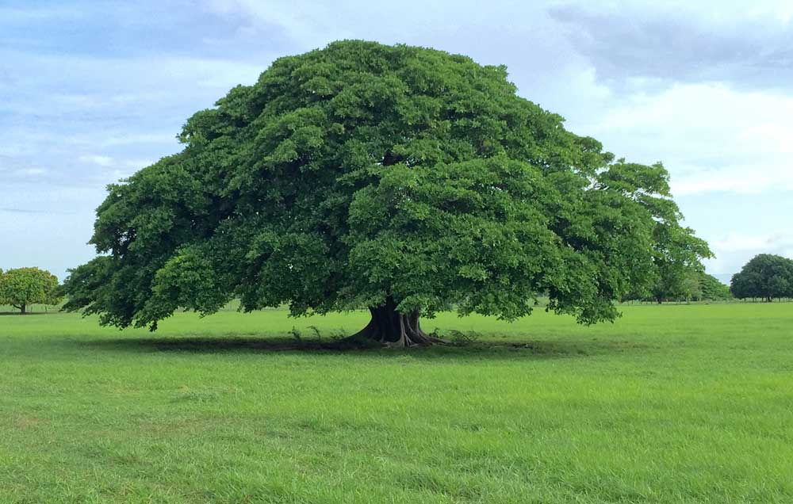

Costa Rica
Historia
Costa Rica es un país de América Central con una geografía accidentada, que incluye bosques tropicales y costas en el Caribe y el Pacífico. Aunque su capital, San José, es hogar de instituciones culturales, como el Museo del Oro Precolombino, Costa Rica es conocida por sus playas, sus volcanes y su biodiversidad. Aproximadamente un cuarto de su área corresponde a selvas protegidas, repletas de fauna, como el mono araña y los quetzales.
Extensión territorial
Ubicada en América Central, posee un territorio con un área total de 51 100 km². Limita con Nicaragua al norte, el mar Caribe al este, Panamá al sureste y el océano Pacífico al oeste.
Símbolos patrios
Guanacaste
La guaria morada
El yigüirro

Departamentos
San José, Alajuela, Cartago, Heredia, Guanacaste, Puntarenas, Limón.
Lugares turísticos
Reserva Biológica Bosque Nuboso Monteverde
Parque Nacional Isla del Coco